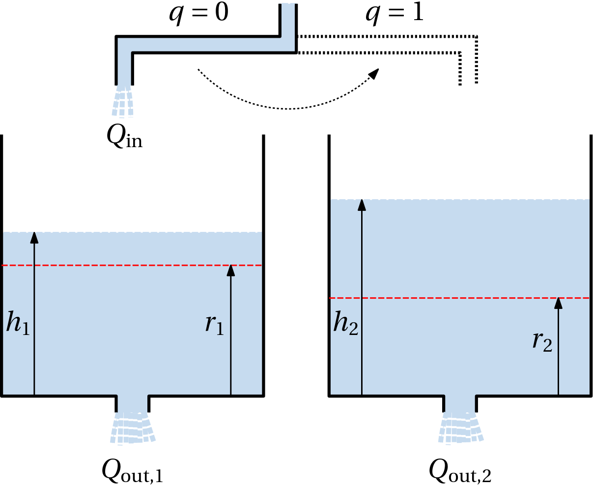
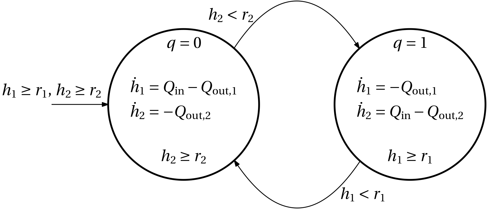
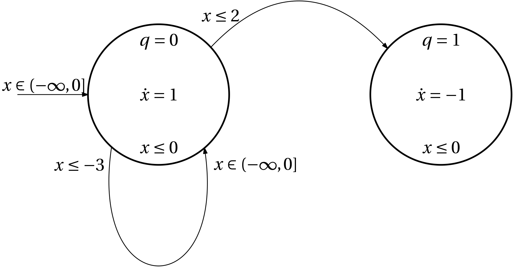

Types of solutions
Now that we know, what a hybrid arc (trajectory) needs to satisfy to be a solution of a hybrid system, we can classify the solutions into several types. And we base this classification on their hybrid time domain E:
- Trivial
- just one point.
- Nontrivial
- at least two points;
- Complete
- if the domain is unbounded;
- Bounded, compact
- if the domain is bounded, compact (well, it is perhaps a bit awkward to call a solution bounded just based on boundednes of its time domain as most people would interpret the boundedness of a solution with regard to the values of the solution);
- Discrete
- if nontrivial and E\subset \{0\} \times \mathbb N;
- Continuous
- if nontrivial and E\subset \mathbb R_{\geq 0} \times \{0\};
- Eventually discrete
- if T = \sup_E t < \infty and E \cap (\{T\}\times \mathbb N) contains at least two points;
- Eventually continuous
- if J = \sup_E j < \infty and E \cap (\mathbb R_{\geq 0} \times \{J\}) contains at least two points;
- Zeno
- if complete and \sup_E t < \infty;
- Maximal
- It cannot be extended. A solution x(t,j) defined on the hybrid time domain E is maximal, if on an extended hybrid time domain E^\mathrm{ext} such that E\subset E^\mathrm{ext}, there is no solution x^\mathrm{ext}(t,j) that coincides with x on E. Some literature uses the “linguistic” terminology that a maximal solution is not a prefix to any other solution. Complete solutions are maximal. But not vice versa.
It is certainly helpful to sketch the times domains for the individual classes of solutions.
Examples of types of solutions
Example 1 (Example of a (non-)maximal solution) \dot x = 1, \; x(0) = 1
(t,j) \in [0,1] \times \{0\}
Now extend the time domain to (t,j) \in [0,2] \times \{0\}.
Can we extend the solution?
Example 2 (Maximal but not complete continuous solution) Finite escape time
\dot x = x^2, \; x(0) = 1,
x(t) = 1/(1-t)
Example 3 (Discontinuous right hand side) \dot x = \begin{cases}-1 & x>0\\ 1 & x\leq 0\end{cases}, \quad x(0) = -1 (unless the concept of Filippov solution is invoked).
Example 4 (Zeno solution of the bouncing ball) Starting on the ground with some initial upward velocity h(t) = \underbrace{h(0)}_0 + v(0)t - \frac{1}{2}gt^2, \quad v(0)=1
What time will it hit the ground again? 0 = t - \frac{1}{2}gt^2 = t(1-\frac{1}{2}gt)
t_1=\frac{2}{g}
Simplify (scale) the computations just to get the qualitative picture: set g=2, which gives t_1 = 1.
t_1=1:
v(t_1^+) = \gamma v(t_1) = \gamma v(0) = \gamma
The next hit will be at t_1 + \tau_1 h(t_1 + \tau_1) = 0 = \gamma \tau_1 - \tau_1^2 = \tau_1(\gamma - \tau_1) \tau_1 = \gamma
t_2 = t_1+\tau_1 = 1 + \gamma:\quad \ldots
t_k = 1 + \gamma + \gamma^2 + \ldots + \gamma^k:\quad \ldots \boxed{\lim_{k\rightarrow \infty} t_k = \frac{1}{1-\gamma} < \infty}
Infinite number of jumps in a finite time!
Example 5 (Water tank)

\max \{Q_\mathrm{out,1}, Q_\mathrm{out,2}\} \leq Q_\mathrm{in} \leq Q_\mathrm{out,1} + Q_\mathrm{out,2}

Example 6 ((Non)blocking and (non)determinism in hybrid systemtems)

- x(0) = -3
- x(0) = -2
- x(0) = -1
- x(0) = 0